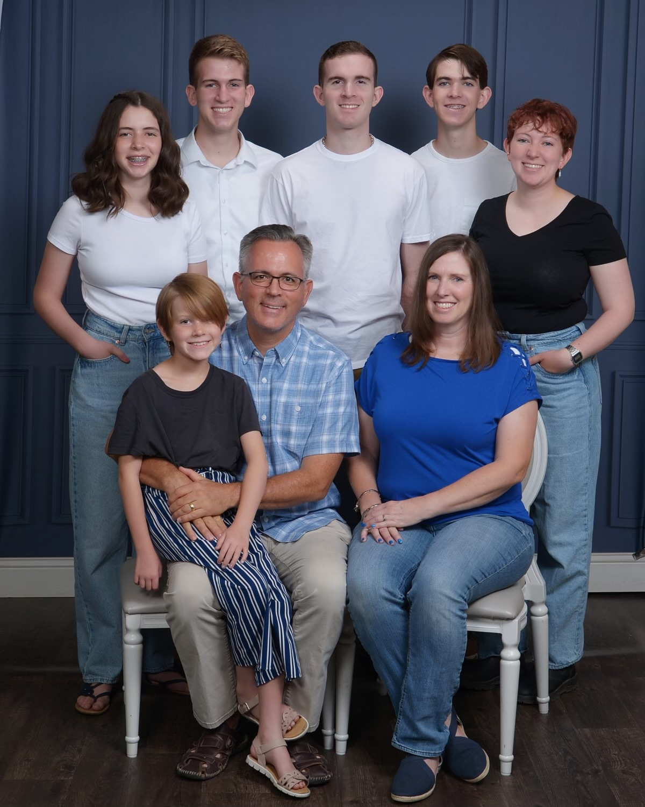

Jacob Sullivan
Welcome to my home page
My name is Jacob Sullivan, and I am a computer science major. I am a single dungeon master and hobby programmer. I grew up in the church of Jesus Christ of Latter-day Saints, and remain an active member.
My name is Jacob Sullivan, and I am a computer science major. I am a single dungeon master and hobby programmer. I grew up in the church of Jesus Christ of Latter-day Saints, and remain an active member.